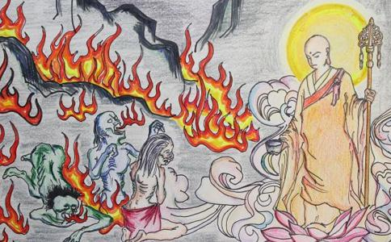

有一天傍晚时分，目连尊者从
一个鬼问道：“我经常头痛，到底是什么原因？”目连回答说：“你前世为人时，喜欢用手杖打人的头，所以现在受饿鬼报，将来还要受
一个鬼问道：“我财产很多但却喜欢穿破烂的衣服，到底是怎么回事？”目连回答说：“你在世为人时曾经布施修福，后来又后悔，所以现在受饿鬼报，将来还要受地狱报。”
一个鬼问道：“我经常居无定所，老是睡在街边巷道，怎么会这样呢？”目连回答说：“你在世为人的时候，有客人到来借住，你不肯答应，等到客人已经不想住了，你又很
一个鬼问道：“我吃不到五斗之量，老是不饱，到底犯了什么过失才会如此？”目连回答说：“你在世为人时，请人吃饭也总不让人吃饱之故，所以现在受饿鬼报，将来受地狱报。”
一个鬼问道：“我的肚子大如瓮，咽喉细如针孔，吞不下食物，以前曾经造过什么罪，才会受到这种
一个鬼问道：“我的男性生殖器生疮发烂，痛得无法形容，到底曾犯了何罪以致如此？”目连回答说：“你在世为人时，曾在佛寺这种清净地方行淫，所以受此报应，将来还会受地狱的果报。”
一个鬼问道：“我有很多儿子，长得都很端正令人喜爱，但是全都早死，我一想起来就肝肠寸断，到底是什么原因？”目连回答说：“你在世为人时，见到自己的儿子
一个鬼问道：“有一条牙齿锐利、两眼发出赤光的大狗经常来咬我，到底怎么回事？”目连回答说：“你在世为人时喜欢带狗打猎，残害众生，没有一点慈悲心，将来还要受地狱之报。”
一个鬼问道：“
一个鬼问道：“我全身到处都疼痛不堪，到底是怎么回事？”目连回答说：“你在世为人时，喜欢捕鱼，而且往往把网捕到的鱼丢到沙土上让他们受很大的
一个鬼问道：“我一直都很笨，什么都不知道，为什么会这样？”目连回答说：“你在世为人时，喜欢半劝半强迫灌人酒，令人喝醉而糊里糊涂，所以现在很笨，将来还会受地狱之报。”
一个鬼问道：“我常常觉得又热又渴，走在路上见到恒河，就想投入河水以消热渴，但是我一走入水里，身体马上就被烧得焦烂，而且焦烂的肌肉还会掉下来露出骨头。虽然很渴，但是只要喝一口水，腹内五脏就会被烧得焦烂，实在痛得无法忍受。我究竟犯了什么罪？”目连回答说：“你在世为人时，喜欢放火焚烧山林川泽，残害众生的命，所以现在受此报应，将来还会到地狱受罚。”
一个鬼问道：“我常常觉得又饿又渴，想要到厕所拿大便来吃，但是厕所的大力鬼总是拿手杖打我，让我没办法靠近厕所，为什么会这样呢？”目连回答说：“你在世为人时是佛寺的住持，有其他的
一个鬼问道：“我身上到处粘着一些又臭又脏的东西，当我饥渴得没有办法的时候，就会自动去吃这些污秽之物，我曾经犯了什么罪吗？”目连回答说：“你在世为人时是修梵天法的
一个鬼问道：“我的肩膀上老是有一个铜瓶，里面装满了铜汁，我的手会自动捉着铜杓把铜汁舀出来，往自己头上浇，真是痛苦不堪，究竟是何原因？”目连回答说：“你在世为人时是当佛寺管僧事的维那，你把一瓶酥藏起来，等客僧走了之后才拿出来和旧住僧分享。要知道这瓶酥是寺庙的公产，一切的人都有分的，由于你吝惜
一个鬼问道：“我一直不是登刀山剑树地狱，就是堕到火坑或沸腾的汤锅地狱里，不停地受种种苦，这是什么原因？”目连回答说：“你在世为人时是天神庙的住持，你经常烹杀牛、羊、猪三牲来祭祀天神，你把三牲血肉灌洒四方的时候，向众人宣称说，你们也这样祭祀天神的话就会大吉大利。由于你散布这种邪魔妖孽之语，欺骗父母百姓，所以堕入地狱受罚。”
一个鬼问道：“我经常不停地吞铁丸，究竟是为什么？”目连回答说：“你在世为人时是个
目连尊者和饿鬼说完他们的前世因缘之后，回到耆阇崛山。